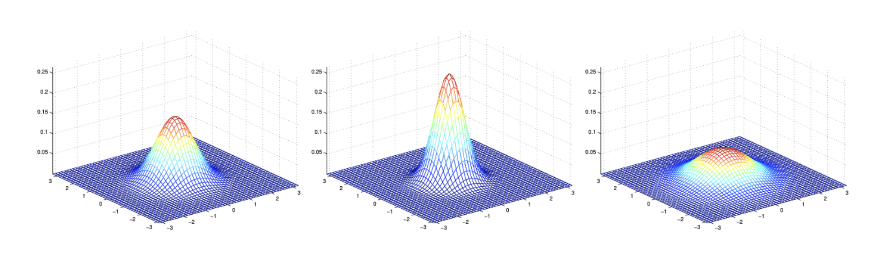
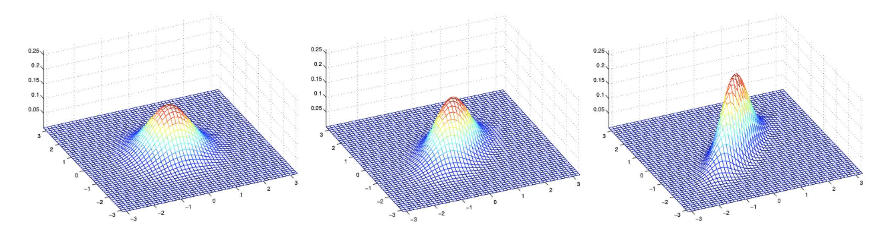
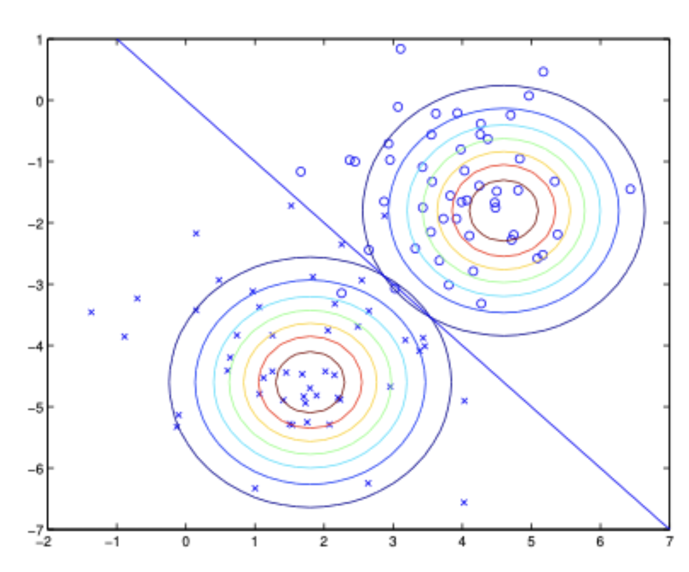

1. 들어가며: 판별 모델과 생성 모델의 차이
지금까지 기계학습 분류(Classification) 문제에서 주로 다룬 알고리즘들(예: 로지스틱 회귀, 퍼셉트론)은 입력 공간 \(\mathcal{X}\)에서 레이블 \(\{0, 1\}\)로 가는 매핑을 직접 학습하거나, 입력 \(x\)가 주어졌을 때 \(y\)의 조건부 확률인 \(p(y|x; \theta)\)를 직접 모델링하는 방식을 취했습니다. 예를 들어, 로지스틱 회귀는 \(p(y|x; \theta)\)를 시그모이드 함수 \(g\)를 이용하여 \(h_\theta(x) = g(\theta^\top x)\)의 형태로 나타냅니다. 이러한 방식의 알고리즘을 판별 학습 알고리즘(Discriminative Learning Algorithms)이라고 부릅니다.
판별 알고리즘의 직관적인 예로, 코끼리(\(y=1\))와 개(\(y=0\))를 분류하는 문제를 생각해 봅시다. 로지스틱 회귀나 퍼셉트론은 주어진 훈련 데이터를 바탕으로 코끼리와 개를 가장 잘 나누는 직선(결정 경계, Decision Boundary)을 찾는 데 집중합니다. 그리고 새로운 동물이 나타나면 이 결정 경계의 어느 쪽에 속하는지만을 확인하여 예측을 수행합니다.
하지만 이와는 근본적으로 다른 접근 방식이 존재합니다. 바로 생성 학습 알고리즘(Generative Learning Algorithms)입니다.
생성 모델은 클래스 간의 경계를 찾는 대신, 각 클래스가 실제로 어떻게 생겼는지(분포)를 직접 모델링합니다.
- 코끼리의 사진들을 보고 코끼리의 특징들이 어떤 분포를 가지는지 모델링합니다.
- 개의 사진들을 보고 개의 특징들이 어떤 분포를 가지는지 별도의 모델을 만듭니다.
- 새로운 동물이 주어지면, 이 동물이 “코끼리 모델”에 더 부합하는지, 아니면 “개 모델”에 더 부합하는지 확률적으로 매칭하여 분류합니다.
수식으로 표현하자면, 판별 모델이 \(p(y|x)\)를 직접 구한다면, 생성 모델은 입력 데이터의 분포인 \(p(x|y)\)와 클래스의 사전 확률인 \(p(y)\)를 각각 모델링하는 방식입니다.
2. 생성 모델의 예측 원리와 베이즈 정리
- 생성 학습 알고리즘은 클래스별 데이터 분포 \(p(x|y)\)와 각 클래스가 등장할 사전 확률(Class priors) \(p(y)\)를 학습합니다. 모델링이 완료되면, 우리가 궁극적으로 알고 싶은 “데이터 \(x\)가 주어졌을 때 클래스가 \(y\)일 확률”인 사후 확률(Posterior distribution) \(p(y|x)\)는 베이즈 정리(Bayes” Rule)를 통해 도출할 수 있습니다.
\[p(y|x) = \frac{p(x|y)p(y)}{p(x)}\]
- 여기서 분모에 해당하는 \(p(x)\)는 전확률의 법칙(Law of Total Probability)에 의해 우리가 이미 학습한 값들로 표현할 수 있습니다. 이진 분류의 경우 다음과 같습니다.
\[p(x) = p(x|y=1)p(y=1) + p(x|y=0)p(y=0)\]
- 실제 기계학습 모델에서 예측을 수행할 때는 \(p(y|x)\)의 정확한 확률값보다는 어떤 클래스의 확률이 가장 높은지(argmax)가 중요합니다. 따라서 예측 단계에서는 \(y\)에 독립적인 분모 \(p(x)\)를 계산할 필요가 없습니다.
\[\arg\max_y p(y|x) = \arg\max_y \frac{p(x|y)p(y)}{p(x)} = \arg\max_y p(x|y)p(y)\]
- 즉, 각 클래스의 사전 확률 \(p(y)\)와 해당 클래스에서 현재 입력 \(x\)가 관측될 우도 \(p(x|y)\)의 곱이 가장 큰 클래스를 선택하면 됩니다.
3. 사전 지식: 다변량 정규 분포 (Multivariate Normal Distribution)
생성 학습 알고리즘 중 가장 대표적인 모델을 다루기 전에, 연속형 변수를 모델링하는 데 핵심이 되는 다변량 정규 분포에 대해 짚고 넘어갈 필요가 있습니다.
\(d\)차원의 다변량 정규 분포는 평균 벡터 \(\mu \in \mathbb{R}^d\)와 공분산 행렬 \(\Sigma \in \mathbb{R}^{d \times d}\)에 의해 매개변수화됩니다. 이때 공분산 행렬 \(\Sigma\)는 대칭 행렬(symmetric)이며 양의 준정부호(positive semi-definite, \(\Sigma \ge 0\))여야 합니다. 이 분포는 \(\mathcal{N}(\mu, \Sigma)\)로 표기하며, 그 확률 밀도 함수(PDF)는 다음과 같이 정의됩니다. \[p(x; \mu, \Sigma) = \frac{1}{(2\pi)^{d/2}|\Sigma|^{1/2}} \exp\left(-\frac{1}{2}(x - \mu)^\top \Sigma^{-1} (x - \mu)\right)\]
- \(|\Sigma|\)는 공분산 행렬 \(\Sigma\)의 행렬식을 의미합니다.
3.1 평균과 공분산의 정의
- 확률 변수 \(X \sim \mathcal{N}(\mu, \Sigma)\)에 대하여, 기댓값(평균)은 자연스럽게 \(\mu\)가 됩니다.
\[E[X] = \int_x x \, p(x; \mu, \Sigma) \, dx = \mu\]
- 벡터 값을 가지는 확률 변수 \(Z\)의 공분산(Covariance)은 실수형 확률 변수의 분산 개념을 다차원으로 확장한 것으로, 다음과 같이 정의됩니다.
\[\text{Cov}(Z) = E[(Z - E[Z])(Z - E[Z])^\top]\]
- 이를 전개하면 더 유용한 계산식을 얻을 수 있습니다.
\[ \begin{align*} \text{Cov}(Z) &= E[ZZ^\top - Z(E[Z])^\top - E[Z]Z^\top + E[Z](E[Z])^\top] \\ &= E[ZZ^\top] - E[Z](E[Z])^\top - E[Z](E[Z])^\top + E[Z](E[Z])^\top \\ &= E[ZZ^\top] - (E[Z])(E[Z])^\top \end{align*} \]
- 따라서 \(X \sim \mathcal{N}(\mu, \Sigma)\)라면, \(\text{Cov}(X) = \Sigma\)가 성립합니다.
3.2 공분산 행렬 변화에 따른 시각적 직관
- 다변량 정규 분포는 \(\Sigma\)의 형태에 따라 데이터가 퍼져있는 형태(분포의 등고선)가 다양하게 변합니다.

- 위 그림에서 보듯 공분산의 대각 성분이 커지면 분포가 넓게 퍼지고(spread-out), 작아지면 압축됩니다(compressed).

- 공분산 행렬의 비대각 성분(off-diagonal elements)은 두 변수 간의 상관관계를 의미합니다. 이 값이 양수로 커지면 우상향 45도 방향으로 분포가 길어지며, 반대로 음수(-0.5, -0.8 등)가 되면 좌상향 방향으로 분포가 압축됩니다. 공분산 행렬은 등고선(contour)의 형태(주축의 방향과 타원의 찌그러짐 정도)를 결정하고, 평균 벡터 \(\mu\)는 단순히 분포의 중심 위치를 이동시킵니다.
4. 가우시안 판별 분석 (Gaussian Discriminant Analysis, GDA)
이제 연속형(continuous-valued) 입력 특성 \(x\)를 가지는 분류 문제에 적용할 수 있는 대표적인 생성 학습 알고리즘인 가우시안 판별 분석(GDA) 모델을 정의해 보겠습니다.
GDA는 클래스 \(y\)에 대한 사전 확률이 베르누이 분포를 따르고, 특정 클래스가 주어졌을 때의 조건부 데이터 분포 \(p(x|y)\)가 다변량 정규 분포를 따른다고 매우 구체적인 강한 가정을 합니다. 특히, 일반적인 GDA에서는 모든 클래스가 동일한 공분산 행렬 \(\Sigma\)를 공유한다고 가정합니다.
\[ \begin{align*} y &\sim \text{Bernoulli}(\phi) \\ x | y=0 &\sim \mathcal{N}(\mu_0, \Sigma) \\ x | y=1 &\sim \mathcal{N}(\mu_1, \Sigma) \end{align*} \]
- GDA 모델의 파라미터는 \(\phi, \mu_0, \mu_1, \Sigma\) 입니다. 각 확률 분포를 명시적으로 쓰면 다음과 같습니다.
\[p(y) = \phi^y (1-\phi)^{1-y}\] \[p(x|y=0) = \frac{1}{(2\pi)^{d/2}|\Sigma|^{1/2}} \exp\left(-\frac{1}{2}(x - \mu_0)^\top \Sigma^{-1} (x - \mu_0)\right)\] \[p(x|y=1) = \frac{1}{(2\pi)^{d/2}|\Sigma|^{1/2}} \exp\left(-\frac{1}{2}(x - \mu_1)^\top \Sigma^{-1} (x - \mu_1)\right)\]
4.1 파라미터 추정 (Maximum Likelihood Estimation)
- 훈련 데이터셋 \(\{(x^{(1)}, y^{(1)}), \dots, (x^{(n)}, y^{(n)})\}\)이 주어졌을 때, GDA 모델의 파라미터 \(\phi, \mu_0, \mu_1, \Sigma\)를 찾기 위해 로그 결합 우도(Log-joint likelihood) 함수 \(\ell\)을 최대화합니다. 판별 모델과 달리 생성 모델은 입력 \(x\)와 레이블 \(y\)의 결합 분포를 모델링하므로, 우도 함수에 \(p(x, y)\)를 사용합니다.
1) 로그 우도 함수 정의
먼저 최대화하고자 하는 목적 함수를 정의합니다. \[ \begin{align*} \ell(\phi, \mu_0, \mu_1, \Sigma) &= \log \prod_{i=1}^n p(x^{(i)}, y^{(i)}; \phi, \mu_0, \mu_1, \Sigma) \\ &= \sum_{i=1}^n \log \left( p(x^{(i)} | y^{(i)}; \mu_0, \mu_1, \Sigma) p(y^{(i)}; \phi) \right) \end{align*} \]
여기에 베르누이 분포와 다변량 정규 분포의 정의를 대입하면 구체적인 식이 완성됩니다. \[ \begin{align*} \ell = \sum_{i=1}^n \Big[ &y^{(i)}\log\phi + (1-y^{(i)})\log(1-\phi) \\ &- \frac{d}{2}\log(2\pi) - \frac{1}{2}\log|\Sigma| - \frac{1}{2}(x^{(i)}-\mu_{y^{(i)}})^\top \Sigma^{-1} (x^{(i)}-\mu_{y^{(i)}}) \Big] \end{align*} \]
2) 파라미터별 유도 과정
(1) 클래스 사전 확률 \(\phi\)의 유도
- \(\phi\)와 관련된 항만 남기고 편미분하여 0이 되는 지점을 찾습니다. 이는 동전 던지기의 확률을 구하는 것과 수학적으로 동일합니다. \[\frac{\partial \ell}{\partial \phi} = \sum_{i=1}^n \left( \frac{y^{(i)}}{\phi} - \frac{1-y^{(i)}}{1-\phi} \right) = 0\]
- 위 식을 정리하면 \(\phi\)는 전체 데이터 중 클래스 1이 나타난 비율이 됩니다. \[\phi = \frac{1}{n} \sum_{i=1}^n y^{(i)} = \frac{1}{n} \sum_{i=1}^n 1\{y^{(i)}=1\} \]
(2) 클래스별 평균 \(\mu_0, \mu_1\)의 유도
- \(\mu_0\)를 추정할 때는 \(y^{(i)}=0\)인 데이터 포인트들만 식에 남습니다. 벡터 미분 공식(\(\nabla_z (z-a)^\top A (z-a) = 2A(z-a)\))을 사용합니다. \[\nabla_{\mu_0} \ell = \sum_{i: y^{(i)}=0} \Sigma^{-1}(x^{(i)}-\mu_0) = 0\]
- 양변에 \(\Sigma\)를 곱하고 정리하면, \(\mu_0\)는 클래스 0에 속한 데이터들의 산술 평균임을 알 수 있습니다. \[\mu_0 = \frac{\sum_{i: y^{(i)}=0} x^{(i)}}{\sum_{i=1}^n 1\{y^{(i)}=0\}} \]
- 동일한 원리로 \(\mu_1 = \frac{\sum_{i: y^{(i)}=1} x^{(i)}}{\sum_{i=1}^n 1\{y^{(i)}=1\}}\)이 도출됩니다.
(3) 공유 공분산 행렬 \(\Sigma\)의 유도
- 공분산 행렬은 모든 클래스가 공유하므로 전체 오차의 제곱합을 이용합니다. 행렬 미분(\(\frac{\partial \log |A|}{\partial A} = A^{-1}\), \(\frac{\partial (a^\top A^{-1} a)}{\partial A} = -A^{-1} aa^\top A^{-1}\))을 적용하여 정리하면 다음과 같습니다. \[\frac{\partial \ell}{\partial \Sigma} = \sum_{i=1}^n \left( -\frac{1}{2}\Sigma^{-1} + \frac{1}{2}\Sigma^{-1} (x^{(i)}-\mu_{y^{(i)}})(x^{(i)}-\mu_{y^{(i)}})^\top \Sigma^{-1} \right) = 0\]
- 이를 \(\Sigma\)에 대해 풀면 중심화된 전체 데이터의 표본 공분산 식이 도출됩니다. \[\Sigma = \frac{1}{n} \sum_{i=1}^n (x^{(i)} - \mu_{y^{(i)}})(x^{(i)} - \mu_{y^{(i)}})^\top \]
4.2 GDA의 시각적 이해와 결정 경계
- GDA 알고리즘이 동작하는 방식을 기하학적으로 살펴보면, 동일한 공분산 \(\Sigma\)를 가정했기 때문에 결정 경계의 특성이 명확해집니다.

- 두 클래스 데이터 각각에 하나의 가우시안 분포가 적합(fit)됩니다.
- \(\Sigma\)를 공유하기 때문에 두 타원 등고선의 형태와 방향(Orientation)은 완전히 같습니다. 단지 중심 위치(\(\mu\))만 다릅니다.
- 두 클래스에 속할 사후 확률이 동일해지는 지점, 즉 \(p(y=1|x) = 0.5\) (혹은 \(p(y=0|x) = 0.5\))인 점들의 집합은 공간상에서 직선 형태의 결정 경계(Linear Decision Boundary)를 이룹니다.
결정 경계(Decision Boundary)
- 결정 경계는 두 클래스에 속할 확률이 정확히 같아지는 지점, 즉 \(p(y=1|x) = p(y=0|x)\)인 지점들의 집합입니다. 이 관계를 로그 오즈(Log-odds) 형태로 정리하면 왜 식이 직선(선형)이 되는지 명확해집니다.
단계 1: 로그 확률비 계산
- 베이즈 정리에 의해 \(p(y|x)\)는 \(p(x|y)p(y)\)에 비례합니다. 따라서 두 확률이 같은 지점은 다음과 같습니다. \[\log \frac{p(x|y=1)p(y=1)}{p(x|y=0)p(y=0)} = 0\]
단계 2: 가우시안 밀도 함수 대입
- 가우시안 분포의 식 \(p(x|y) = \frac{1}{(2\pi)^{d/2}|\Sigma|^{1/2}} \exp(-\frac{1}{2}(x-\mu)^\top \Sigma^{-1}(x-\mu))\)를 대입합니다. 로그를 취하면 지수 파트의 이차 형식이 밖으로 나옵니다. \[\log \frac{p(x|y=1)}{p(x|y=0)} = -\frac{1}{2}(x-\mu_1)^\top \Sigma^{-1}(x-\mu_1) + \frac{1}{2}(x-\mu_0)^\top \Sigma^{-1}(x-\mu_0)\]
단계 3: 이차항의 소거
- 위 식의 이차항 \((x^\top \Sigma^{-1} x)\) 부분을 전개해 보면 다음과 같습니다.
- 첫 번째 항: \(-\frac{1}{2}(x^\top \Sigma^{-1} x - 2\mu_1^\top \Sigma^{-1} x + \mu_1^\top \Sigma^{-1} \mu_1)\)
- 두 번째 항: \(+\frac{1}{2}(x^\top \Sigma^{-1} x - 2\mu_0^\top \Sigma^{-1} x + \mu_0^\top \Sigma^{-1} \mu_0)\)
- 여기서 두 클래스가 동일한 \(\Sigma\)를 공유하기 때문에 \(x^\top \Sigma^{-1} x\) 항이 서로 상쇄되어 사라집니다. 남은 식은 \(x\)에 대한 1차식(선형식) 형태가 됩니다. \[\text{Boundary: } \theta^\top x + \theta_0 = 0\]
- 이것이 GDA의 결정 경계가 항상 직선(또는 초평면)이 되는 수학적 이유입니다.
5. GDA와 로지스틱 회귀(Logistic Regression)의 비교
- GDA와 이전에 배운 로지스틱 회귀는 흥미로운 수학적 연결 고리를 가지고 있습니다.
- GDA에서 도출된 식을 이용해 사후 확률 \(p(y=1|x)\)를 \(x\)에 대한 함수로 다시 정리해 보면 아래와 같은 형태를 얻을 수 있습니다.
\[p(y=1|x; \phi, \Sigma, \mu_0, \mu_1) = \frac{1}{1 + \exp(-\theta^\top x)}\]
여기서 가중치 벡터 \(\theta\)는 \(\phi, \Sigma, \mu_0, \mu_1\)에 관한 적절한 함수로 표현됩니다. (실제로 베이즈 정리 식에 가우시안 분포 식을 대입하여 분모와 분자를 \(p(x|y=0)p(y=0)\)으로 나누면 자연스럽게 로지스틱 시그모이드 형태가 유도되며, 두 가우시안의 2차 항 \(x^\top \Sigma^{-1} x\)이 공유 공분산 덕분에 서로 상쇄되어 \(x\)에 대한 선형식 \(\theta^\top x\)만 남게 됩니다.)
이 형태는 놀랍게도 로지스틱 회귀가 \(p(y=1|x)\)를 모델링하기 위해 사용하는 바로 그 수식 형태입니다. 즉, \(p(x|y)\)가 (동일한 \(\Sigma\)를 갖는) 다변량 가우시안 분포를 따른다면, \(p(y|x)\)는 필연적으로 로지스틱 함수를 따르게 됩니다.
5.1 가정의 강도와 차이점
- 수학적 형태가 동일함에도 두 알고리즘을 구분해야 하는 이유는 무엇일까요? 핵심은 가정(Assumption)의 차이에 있습니다.
- 명제: \(p(x|y)\)가 가우시안 \(\Rightarrow\) \(p(y|x)\)는 로지스틱 함수. (참)
- 역명제: \(p(y|x)\)가 로지스틱 함수 \(\Rightarrow\) \(p(x|y)\)가 가우시안. (거짓)
- 이 비대칭성은 GDA가 로지스틱 회귀보다 데이터에 대해 훨씬 더 강한 모델링 가정을 하고 있음을 의미합니다.
1) 데이터가 실제로 가우시안 분포를 따를 때
- GDA의 가정이 정확하거나 근사적으로 맞다면, GDA는 데이터를 훨씬 더 효율적으로 사용합니다. 점근적으로 효율적(asymptotically efficient)이라는 특성을 가지는데, 이는 훈련 데이터 \(n\)이 무한히 커질 때 GDA보다 \(p(y|x)\)를 더 정확히 추정할 수 있는 알고리즘이 없음을 뜻합니다. 심지어 훈련 데이터의 크기가 작을 때도 가우시안 가정이 유지된다면 보통 GDA가 로지스틱 회귀보다 성능이 우수합니다.
2) 데이터가 비-가우시안 분포를 따를 때 (Robustness)
가정이 틀렸을 때 문제가 발생합니다. 사실 \(p(y|x)\)가 로지스틱 함수 형태를 띠게 만드는 분포는 가우시안 이외에도 많습니다. 예를 들어, \(x|y=0 \sim \text{Poisson}(\lambda_0)\)이고 \(x|y=1 \sim \text{Poisson}(\lambda_1)\)과 같이 이산형 포아송 분포를 따르더라도 \(p(y|x)\)는 완벽하게 로지스틱 함수가 됩니다.
이러한 포아송 데이터에 대해 약한 가정을 하는 로지스틱 회귀를 적용하면 무리 없이 좋은 성능을 냅니다. 하지만 비정규 데이터에 억지로 가우시안 분포를 피팅하려 하는 GDA를 사용하면 예측 성능이 매우 불확실해집니다.
5.2 요약 결론
- GDA (가우시안 판별 분석):
- 데이터가 가우시안이라는 강력한 가정을 합니다.
- 이 가정이 맞다면 데이터 효율성이 매우 뛰어납니다 (작은 데이터셋에서도 잘 동작).
- 로지스틱 회귀 (Logistic Regression):
- 약한 가정을 바탕으로 동작합니다.
- 데이터 분포의 가정 오류에 대해 훨씬 더 강건(Robust)합니다.
- 실제 응용 환경에서는 데이터가 완벽한 가우시안을 따르는 경우가 드물기 때문에 실무에서는 로지스틱 회귀가 GDA보다 훨씬 더 널리 사용됩니다.